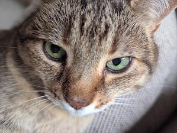

Crop region
getCropRegion() — the crop mapped back onto the original image's own pixels, for server-side cropping.
export() re-encodes the crop in the browser and gives you
an image to upload. getCropRegion() is the alternative: it
returns { x, y, width, height, rotation, flip } in the
original, unrotated, unflipped source image's own pixel
coordinates, so you can upload the original file as-is and have your
server do the actual cropping — no client-side re-encoding, full original
resolution preserved. The server reproduces the transform by flipping,
then rotating, then cropping to the returned rectangle.
Drag/zoom/rotate the cropper below, then click the button — the red box
on the right shows exactly the region getCropRegion()
returns, drawn directly on the unmodified original photo.
Original image, unrotated and unflipped, with the returned region overlaid:
